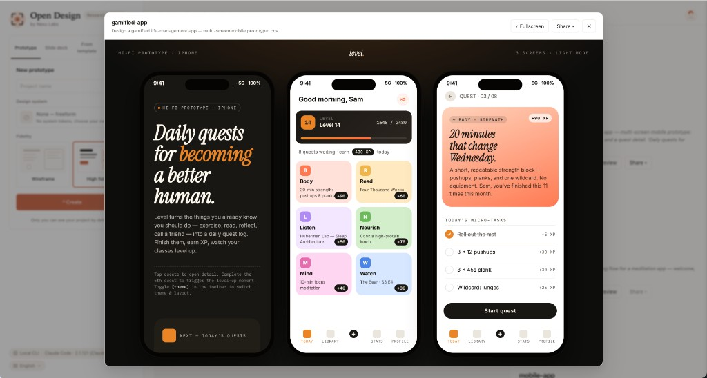

Chapter
06
Web and Mobile Prototypes
Generating interactive single-page and multi-screen UIs
Open Design's prototype artifacts are self-contained interactive HTML, which makes them instantly previewable, exportable, and reviewable.
6.1 Web Prototypes
Generate a single-page web prototype and understand viewport handling
A web prototype in Open Design is a single self-contained HTML document: styles inlined, scripts bundled, no CDN calls, no build step. You write a prompt, the agent selects a prototype skill, and the daemon streams the artifact into the sandboxed preview. One file comes out the other side. That's the mental model to hold --- self-contained HTML from prompt to export.
As of June 2026, Open Design ships around 15 prototype-family skills including web-prototype, saas-landing, pricing-page, docs-page, blog-post, and email-marketing (out of 100+ skills total as of June 2026). Each carries its own SKILL.md frontmatter that declares its mode, preview type, and required brand tokens.
The default viewport is responsive web at high fidelity. You can explicitly target a narrower breakpoint by naming it in your prompt: "mobile viewport", "1440px desktop", "tablet landscape". If you don't specify, the skill targets the widest responsive canvas.
A concrete web prototype walkthrough
Here's a generation prompt for a SaaS landing page:
Build a modern SaaS landing page with a dark hero section,
gradient headline, three feature cards below, and a
'Get Early Access' CTA button. Use the Vercel design system.That prompt is enough. The agent resolves it to the saas-landing skill (or web-prototype if no better match exists), loads the Vercel DESIGN.md brand contract, and starts streaming HTML into the preview.
Open a new project in Open Design. The daemon creates a project directory at .od/projects/<id>/.
In your agent CLI, describe the page you want. Include at minimum: a layout description and a named brand system. The more concrete the layout description, the less iteration you'll need.
Build a modern SaaS landing page with a dark hero section,
gradient headline, three feature cards below, and a
'Get Early Access' CTA button. Use the Vercel design system.Watch the artifact stream into the sandboxed preview. The streaming artifact parser renders HTML incrementally as the model generates it. The closing </artifact> tag triggers a save to .od/projects/<id>/artifacts/.
Review the preview in the sandbox. If the layout is off or the brand application looks wrong, write a follow-up prompt now. Don't export until the preview matches your intent.
Agent receives brand name + layout description
saas-landing selected; DESIGN.md tokens loaded
Colors, typography, spacing injected before first token
HTML rendered incrementally into sandboxed iframe
Dark hero, gradient headline, feature cards visible on close of </artifact>
Self-contained HTML is the unsung hero feature of Open Design. I've watched review cycles collapse when a prototype is a single file anyone can open in any browser. No server, no build, no "you need Node 24" --- just open the file. The opposite is a prototype that requires a dev environment to view, which means most stakeholders never open it. Self-contained HTML removes that friction entirely.
| Type | Viewport default | Best skill | Last verified |
|---|---|---|---|
| Web landing page | Responsive, 1440px wide | saas-landing |
June 2026 |
| Generic single-page web | Responsive, 1440px wide | web-prototype |
June 2026 |
| Mobile app screen | 375px (iPhone 15 Pro frame) | mobile-app |
June 2026 |
| Live dashboard | 1280px, sidebar layout | dashboard |
June 2026 |
6.2 Mobile App Prototypes
Generate a multi-screen mobile prototype with device framing
Mobile prototypes differ from web prototypes in two ways: they render inside a device frame, and they support multi-screen flows. The agent builds every screen of a flow inside one self-contained HTML document, switching between screens via navigation controls, not separate files. The device frame itself --- an iPhone 15 Pro or Pixel 8 Pro SVG --- sits in skills/mobile-app/assets/frames/ and wraps the canvas without being regenerated on each run.
As of June 2026, the mobile-app and mobile-onboarding skills include pixel-accurate frames for iPhone 15 Pro (black and white) and Pixel 8 Pro (obsidian and porcelain). The frame is a shared asset the skill reuses across all mobile artifacts; the agent doesn't redraw it on each generation, which keeps file size in check.
Generating a multi-screen mobile flow
Build a 3-screen mobile onboarding flow using the Notion
brand system: welcome screen, permissions request screen,
and first-task detail screen. Include a working bottom-sheet
navigation component. Frame in iPhone 15 Pro.Describe all screens in a single prompt. Name each screen explicitly ("welcome screen", "permissions screen", "first-task screen"). The agent builds the full multi-screen flow as one artifact.
Build a 3-screen mobile onboarding flow using the Notion
brand system: welcome screen, permissions request screen,
and first-task detail screen. Include a working bottom-sheet
navigation component. Frame in iPhone 15 Pro.Review the preview. The device frame wraps the canvas. Navigate between screens using the controls the skill generates (typically Previous / Next buttons or swipe emulation via arrow keys). If a screen is missing or the brand application is off, iterate before exporting.
To swap the device frame, add the frame name to your follow-up prompt: "Reframe this in Pixel 8 Pro obsidian." The agent swaps the SVG wrapper without regenerating the screen content.

skills/mobile-app/
├── SKILL.md
├── example.html
├── assets/
│ ├── frames/
│ │ ├── iphone-15-pro-black.svg
│ │ ├── iphone-15-pro-white.svg
│ │ ├── pixel-8-pro-obsidian.svg
│ │ └── pixel-8-pro-porcelain.svg
│ └── template.html
└── references/
└── mobile-ui-patterns.mdThe SKILL.md frontmatter declares this skill as mode prototype with preview type html:
---
name: mobile-app
description: Multi-screen mobile UI prototype with device framing
mode: prototype
preview: html
entry: index.html
example_prompt: "Build a 3-screen onboarding flow with welcome,
permissions, and first-task screens. Frame in iPhone 15 Pro."
design_system:
required:
- color
- typography
- spacing
---Device frame models in assets/frames/ are version-sensitive. The iPhone 15 Pro frames ship in v0.9.0; a future release may add or rename frames (e.g., iPhone 16 Pro). If you name a specific frame that doesn't exist, the skill falls back to the default frame. Always verify the frame renders as expected in the preview before exporting.
6.3 Adding Interactivity and State
How interactivity lives inside self-contained HTML
Generated prototypes aren't static mockups. Buttons navigate, tabs switch, modals open, and forms validate --- all inside the same self-contained HTML file, client-side, with no backend. The streaming artifact parser renders interactive HTML as the model generates it, and the sandbox preserves that interactivity in the preview. This distinction matters: what you see in the sandbox is what you get when you export.
Interactivity in generated artifacts uses vanilla JavaScript or a lightweight framework inlined into the HTML. Buttons have event listeners, tabs manage aria-selected state, modals show and hide on click. The key point is that this is client-side state --- it lives in memory and resets on page reload. Open Design doesn't provide a persistence layer for prototype state.
Static mockup vs interactive prototype
The difference shows up clearly in how you prompt. A static mockup prompt doesn't ask for behaviors; an interactive prototype prompt names them explicitly.
Static mockup prompt:
Build a settings page with three tabs:
Profile, Notifications, and Security.Result: three tab labels rendered as visual elements. Clicking them does nothing.
Interactive prototype prompt:
Build a settings page with three tabs:
Profile, Notifications, and Security.
Each tab click should show its panel and
hide the others. Default to the Profile tab.Result: three functional tabs with client-side panel switching. The default tab is active on load.
The same principle applies to modals, bottom-sheets, accordions, and forms. Name the interaction: "clicking the card opens a detail modal", "the accordion expands on click", "the form validates email format on blur". Vague prompts produce vague prototypes.
State persistence within a run
Within a single preview session, client-side state persists as long as the iframe isn't reloaded. Navigating between screens in a multi-screen flow preserves tab state and form input values. Clicking Export and opening the resulting HTML file starts fresh --- no state is serialized into the export.
If you need a prototype to demo a specific state (a filled form, a specific tab open, a modal triggered), describe that state in the prompt rather than relying on click-through during a review. "Show the Security tab active with two-factor authentication enabled" produces an artifact that opens in the right state without requiring the reviewer to click through to get there.
6.4 Live Dashboards
Generate a dashboard with tweakable parameters and real data sources
Dashboard prototypes are the highest-fidelity artifact in the prototype family: KPI cards, charts, data tables, sidebar navigation, and adjustable filters, all in one self-contained HTML file. You supply the data --- pasted as CSV rows, as a JSON array, or as a local endpoint URL --- and the skill renders it. No external BI platform required.
As of June 2026, the dashboard skill supports CSV paste, JSON array, and local endpoint data sources. The "tweakable parameters panel" --- a sidebar control for adjusting chart ranges, metric toggles, and filters without re-prompting --- is referenced in v0.9.0 documentation but its implementation status in the current release should be verified. The fallback is re-prompting: "Change the date range to Q1 2026" triggers a targeted regeneration that preserves the rest of the dashboard layout.
Generating a live sales dashboard
Build a live sales dashboard with adjustable date-range
filter and four KPI cards (Revenue, Conversion Rate,
Customer Acquisition Cost, Churn). Include a revenue-over-time
line chart and a top-products table. Use the Stripe design system.Write a prompt that names each KPI card, chart type, and data table explicitly. Use the Stripe design system or your own house brand.
Build a live sales dashboard with adjustable date-range
filter and four KPI cards (Revenue, Conversion Rate,
Customer Acquisition Cost, Churn). Include a revenue-over-time
line chart and a top-products table. Use the Stripe design system.The skill generates the dashboard with placeholder data. To replace it with real data, follow up with a data-binding prompt:
Replace the revenue chart data with this CSV:
month,revenue
Jan,45000
Feb,52000
Mar,68000
Apr,71000
May,89000Review the updated preview. The chart rerenders with the new data; the card values and table update to match. If the layout shifts due to data volume changes, iterate with a layout-correction prompt before exporting.
Revenue, conversion, CAC, churn rows pasted into follow-up prompt
dashboard
Data bound to KPI cards + chart dataset constants inside artifact
Client-side JS renders four KPI cards, revenue line chart, top-products table
All data inlined as const dashboardData; no backend, no BI platform
Dashboard data as self-contained HTML
The generated dashboard inlines its data directly in the HTML, typically as a JavaScript constant. This is a preview and communication artifact --- it's not wired to a live database. If you need the chart to reflect updated numbers, you re-prompt with new data, not re-query an endpoint.
// Data inlined in the generated dashboard artifact
const dashboardData = [
{ month: 'Jan', revenue: 45000, customers: 320 },
{ month: 'Feb', revenue: 52000, customers: 380 },
{ month: 'Mar', revenue: 68000, customers: 450 }
];
// Chart rendered via D3 or Chart.js inlined in the same file
// No external API calls; fully self-containedThe dashboard skill is the right tool for executive reviews and investor demos where you need real numbers in a polished layout fast. I can drop in a CSV of actuals, generate the dashboard in minutes, and hand stakeholders a file they can open without help. The catch is that "live" in the skill name means "interactive controls", not "auto-refreshing from a database." Know which one you need before the demo.
6.5 From Mockup to Interactive Prototype
Iterating a static layout into a clickable prototype
The first generation rarely produces a finished prototype. It produces a starting layout. Quality comes from the iterate step of the generate, preview, iterate, export loop --- not the generate step. This section shows how to move a static layout to a fully interactive prototype in a sequence of targeted follow-up prompts, and how to know when to stop iterating and export.
The iterate sequence
| Iteration | Prompt intent | What changes |
|---|---|---|
| 1 (generate) | Describe layout, brand, content structure | Layout, typography, spacing, color from DESIGN.md |
| 2 (layout fix) | "The hero section is too tall; reduce the top padding" | Hero height only; rest of layout preserved |
| 3 (add interactivity) | "Add tab switching to the feature section with three tabs: Product, Pricing, Integrations" | Feature section gains working tabs; rest preserved |
| 4 (state target) | "Open the Pricing tab by default and add an annual/monthly toggle above it" | Active tab and new toggle control added |
| 5 (export check) | Export to HTML, open in a browser without a server | Verify the exported file matches the preview |
Targeted iteration prompts are more reliable than broad ones. "Fix the pricing section" is vague --- the agent might change layout, typography, and copy all at once. "Set the Starter plan price to $29/month and make the Enterprise tier say 'Contact us'" changes exactly two values.
Iteration patterns that work
These patterns produce reliable iterations:
# Structural change: name the section and the change
"In the navigation, change the CTA button label from
'Get Started' to 'Request Demo' and change its background
to the brand primary color."
# Layout correction: name what is wrong
"The three feature cards stack vertically on a 1440px
viewport. Arrange them in a 3-column grid."
# Interactivity addition: describe the behavior fully
"Add a modal to the 'View Details' button on each product card.
The modal should show the full product description and a
'Buy Now' CTA. Close on Escape or clicking the overlay."When self-contained HTML reaches its limits
Self-contained HTML is a preview convenience, not a production pattern. At some point a prototype becomes large enough that a real build pipeline --- component library, routing, state management --- produces better results than a single inlined file. That point is usually when you're building a multi-page application with shared state between routes, or when a developer needs to ship the artifact as a real product.
For those cases, use the code-refresh plugin (covered in section 9.4) to refactor a generated prototype into a proper Next.js or React component tree. The prototype gets you the design approved; the plugin gets you the code production-ready.
A generated prototype is not production code. Artifacts are self-contained HTML optimized for preview and review, not for performance, accessibility standards compliance, or production architecture. The self-contained format means inlined styles and scripts --- appropriate for a prototype file that stakeholders open once, not for a codebase that ships to users. Treat the prototype as the communication artifact it is, and use the code-refresh plugin when production code is the actual deliverable.
Prototype troubleshooting
| Symptom | Cause | Fix |
|---|---|---|
| Preview is blank or shows only the device frame shell | Daemon not running, or agent MCP connection dropped | Verify daemon health at http://localhost:7456; reconnect MCP with od mcp install <agent> |
| Brand system tokens not applied (default fonts and colors appear) | Named brand system not found, or DESIGN.md missing a required token field | Check the brand name matches exactly (case-sensitive); run od brands list to confirm it's available |
| Exported HTML looks different from preview (broken fonts, missing images) | Preview iframe loads external assets live; export inlines only local assets | Re-prompt to replace CDN fonts with system fonts; verify all image assets are local before exporting |
| Interactive elements (tabs, modals) don't work in the exported HTML | Export inlining stripped or re-ordered script tags | Open the exported file directly in a browser (not via a server); if still broken, re-export and inspect the script section of the HTML |
The four-beat loop in prototype work
The prototype workflow is the generate, preview, iterate, export loop in its most visible form. Generate produces the first layout. Preview surfaces what's wrong. Iterate targets each problem precisely. Export verifies the shippable file. Don't skip the export verification step --- the preview and the exported file can diverge on external asset handling, as noted in the troubleshooting table above.
Skill + brand + prompt → streaming HTML artifact
Sandboxed iframe renders interactive prototype
Targeted follow-up prompts fix layout, add behaviors
Inlined HTML verified offline, shared as one file
Next: Prototypes are one artifact family. Chapter 07 covers the other artifact surfaces --- presentation decks, HyperFrames HTML-to-MP4 motion graphics, and AI images --- and shows how the same brand contract drives all of them under the principle of one brand, many surfaces.